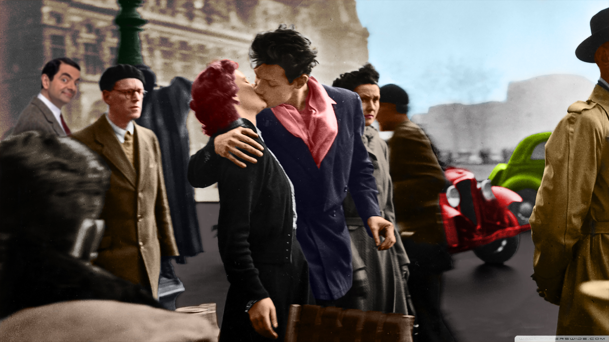
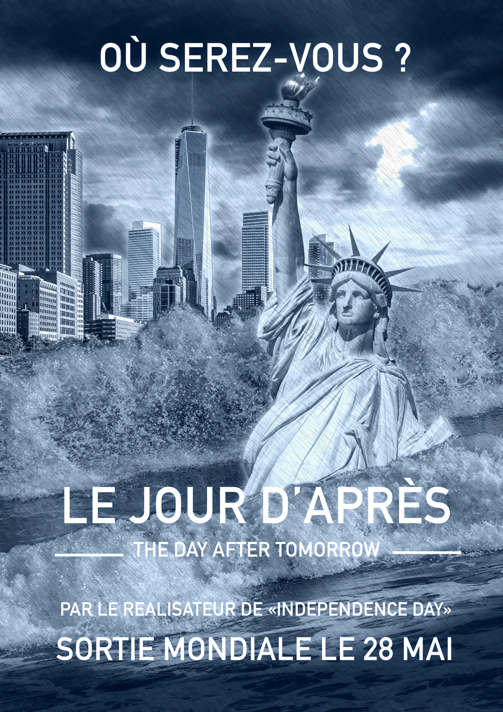
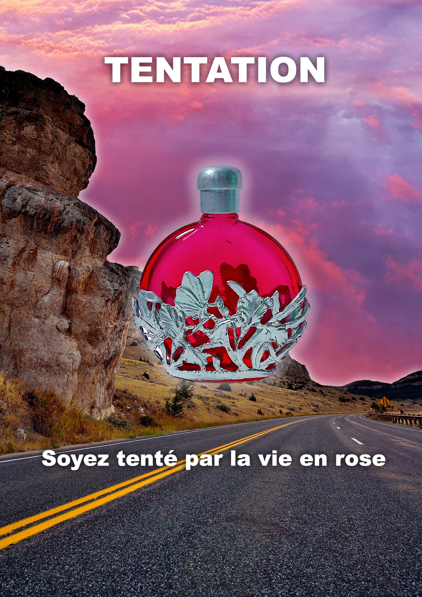

HEY, JE SUIS ÉTUDIANT EN MMI ET VOICI MON PORTFOLIO
Grâce à ce petit morceau de code fait par mes soins, vous allez pouvoir en consultant bien tous les recoins de cette page en apprendre un peu plus sur moi
About Me
Étudiant en cours d’apprentissage en Infographie et Développement Web
Ça ? C'est moi, je m'appelle Andria Piercecchi j'ai 18 ans et je suis étudiant en MMI à l'IUT de Corte. Étant petit j'avais énormément de rêves et de passions comme le football, la cuisine, l'astronomie, la nature et bien plus encore. Je m’intéressais à tout et j'aimais voir toutes les plus belles chose de notre monde, c'est sûrement cet intérêt à tout qui m'a donné l'envie de créer moi aussi à mon tours des belles choses. Débutant en développement Web j’ai toujours voulu savoir ce qu’il se cachait derrière les sites internet, et cet exercice de Portfolio m’a fait découvrir et m’a appris beaucoup. En m’informant et en regardant ce que les autres font, j’ai acquis des légères compétences qui me donnent envie d’en savoir encore plus sur le monde du web et surtout du codage. La partie infographie est celle qui a fait que j’ai choisi MMI, elle était pour moi plus évidente et plus dans mon domaine car c’est ce que je voulais faire. Toujours à l’écoute je ne cesse d'apprendre et de rechercher. Compréhensif à tous les niveaux, je fais gaffe aux remarques que l’on me porte et je n’hésite pas à me remettre en question, je pense que ce sont ces 13 années passés a jouer au foot qui ont fait que j’ai développé cette capacité. Je n’ai jamais été mis dans la facilité par qui que ce soit, j’ai toujours du travailler dur pour atteindre mes objectifs et avoir ce que je voulais. Ça n’a peut-être pas toujours payer comme je le voulais mais j’aurais fait tout mon possible.
My Projects
Colorisation d'une image en noir et blanc
Afin de nous initier à la colorisation sur Photoshop, un petit exercice sur une image en noir et blanc nous a été donné et a fait l'objet d'une note dans la matière design graphique
Octobre 2021
Page de garde "Gestion de projet
Lors d'un TP de gestion de projet, une partie portait sur le design, il nous était demandé de faire une page de garde pour le projet Goliath
Novembre 2021
Reconstitution d'une affiche de film
Dans le cadre d'une évalation en design graphique, l'exercice était de reconstituer une affiche d'un film (le jour d'après), avec des éléments fournis par le professeur
Novembre 2021
Affiche promotionnelle de parfum
Projet fait cette fois entièrement seul en autonomie, il a été demandé de créer une affiche promotionnelle pour une marque de parfum et d'imaginer l'univers d'une marque
Décembre 2021
